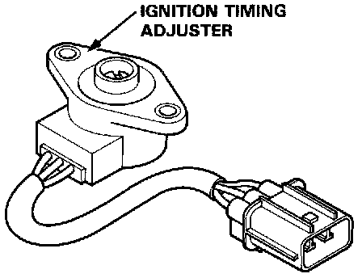
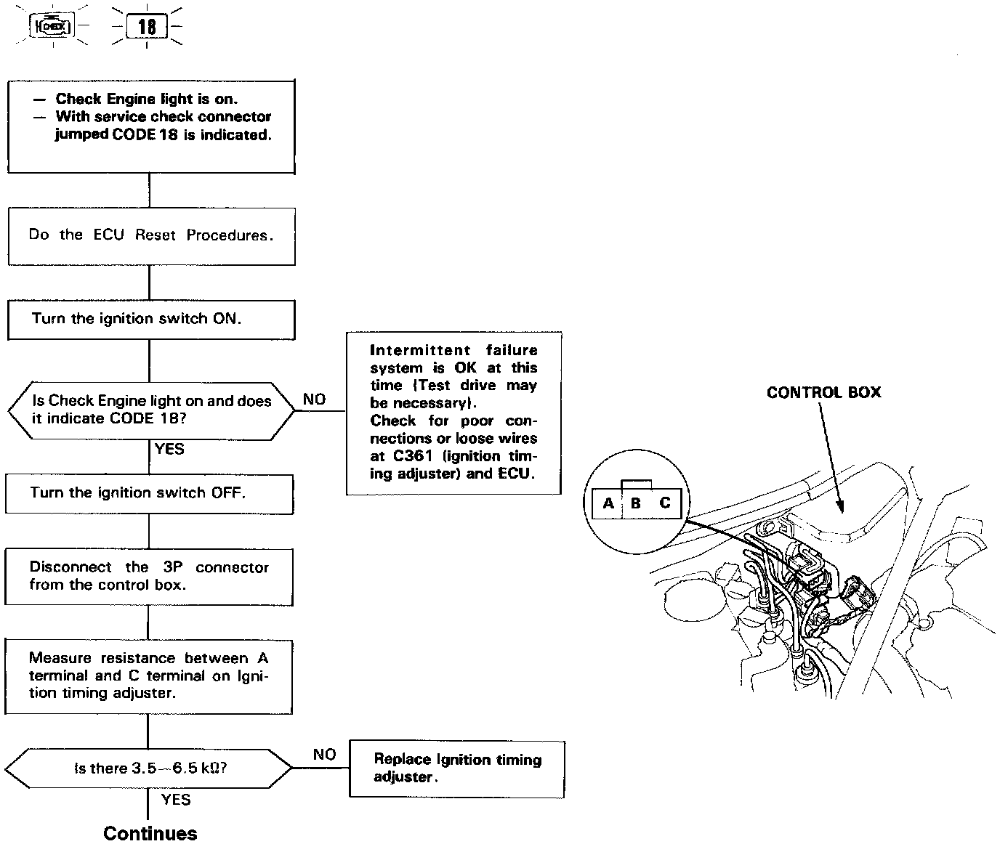
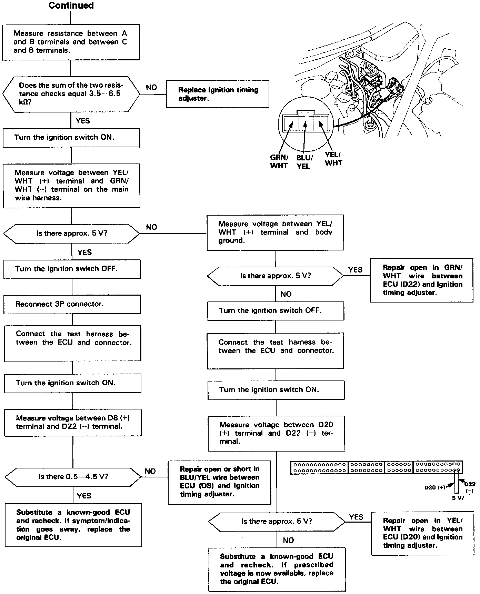

DTC 18



Self-diagnosis Check Engine light indicates code 18: A problem in the Ignition Timing Adjuster circuit.
The ignition timing adjuster allows the electronic ignition advance to be set to 15° BTDC at idle.


